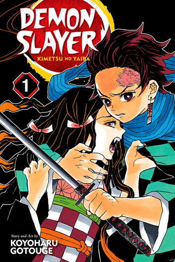
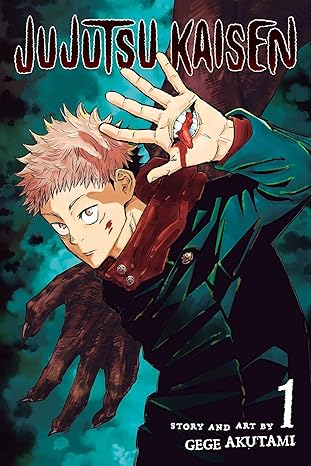
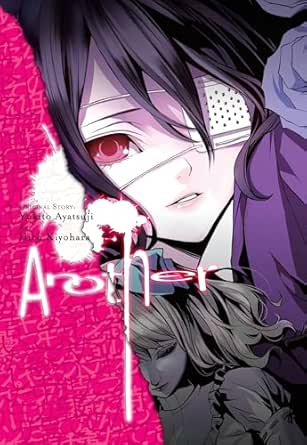
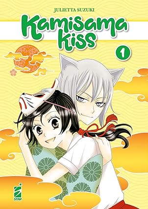

Mangas

Kimetsu no yaiba (Demon Slayer)
Año de publicación: 2016 – 2020
Autor: Koyoharu Gotōge
Género: Shōnen, Acción, Terror, Aventura
Sinopsis:
En el Japón de la Era Taisho, Tanjiro Kamado regresa a casa y encuentra a su familia masacrada.
Su hermana Nezuko es la única sobreviviente, pero ha sido convertida en demonio. Decidido a devolverle su
humanidad, Tanjiro se convierte en cazador de demonios y emprende un largo viaje lleno de peligros.

Jujutsu Kaisen: Guerra de hechiceros en Japón
Año de publicación: 2018 – 2024
Autor: Gege Akutami
Género: Acción, Sobrenatural, Fantasía oscura, Shōnen
Sinopsis:
Yuji Itadori es un estudiante con habilidades físicas extraordinarias. Cuando ingiere el dedo de
una poderosa maldición llamada Ryomen Sukuna, queda atrapado en el mundo de los hechiceros jujutsu y
las maldiciones sobrenaturales que amenazan a la humanidad.
Yarichin☆Bitch Club
Año de publicación: 2012 – presente
Autor: Ogeretsu Tanaka
Género: Comedia, Romance, Yaoi/BL (Boys Love)
Sinopsis:
Takashi Tōno es transferido a la Academia Morimori, una escuela exclusivamente masculina en las montañas.
Al unirse al club de fotografía creyendo que es tranquilo, descubre que sus miembros forman el llamado
"Yarichin Bitch Club". Comedia y romance para lectores adultos. (Contenido explícito +18)
Hirunaka No Ryuusei (Daytime Shooting Star)
Año de publicación: 2011 – 2014
Autor: Mika Yamamori
Género: Shōjo, Romance, Comedia, Vida escolar
Sinopsis:
Suzume Yosano, una chica de 15 años del campo, se ve obligada a mudarse a Tokio para vivir con su tío cuando
sus padres se trasladan a Bangladesh. Al llegar, se pierde y es ayudada por un joven de aspecto peculiar que,
al día siguiente, resulta ser nada más y nada menos que su nuevo profesor de Historia, Satsuki Shishio. Entre
las exigencias de la vida en la gran ciudad, nuevas amistades y sentimientos que no puede controlar, Suzume
descubrirá que el primer amor puede ser tan fugaz e inesperado como una estrella fugaz diurna.

Another
Año de publicación: 2010 – 2012
Autor: Yukito Ayatsuji
Género: Seinen, Horror, Misterio
Sinopsis:
En 1972, un popular estudiante de la clase 3-3 de la Secundaria Yomiyama Norte murió y sus compañeros actuaron
como si siguiera vivo. Décadas después, Koichi Sakakibara llega a esa misma clase y conoce a la enigmática
Mei Misaki, ignorada por todos. Una maldición mortal los acecha.

Kamisama Hajimemashita (Kamisama Kiss)
Año de publicación: 2008 – 2016
Autor: Julietta Suzuki
Género: Shōjo, Romance, Sobrenatural
Sinopsis:
Nanami Momozono queda sin hogar cuando su padre huye por sus deudas. Al ayudar a un extraño llamado Mikage,
él le cede su casa como agradecimiento, pero resulta ser un templo sintoísta. Nanami es declarada la nueva
deidad local y debe aprender sus deberes junto a Tomoe, un demonio zorro reacio.